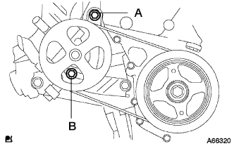

Installation of oil pump ASSY |
| 1. Installation of oil pump seals |
Use the SST to hit a new oil seal evenly to the end of the oil pump.
 |
Apply a small amount of MP grease No.2 to the lip of the oil seal.
| 2. Oil pump assignment |
 |
Attach a new O -ring to the point of the figure.
Apply a sticker packing to the engine itself and the oil pump.

 |
The oil pump dried brotasplain part is set to the two -sided part of the crankshaft, and the oil pump asser is inserted into the crankshaft.
 |
Attach the oil pump ASSY with 15 bolts and nuts.
| 3. Camshaft timing oil control valve ASSY installation |
At the bolt, attach the camshaft timing oil control valve.
| 4. Crank position sensor installation |
Apply a small amount of engine oil to the O -ring.
 |
Attach the crank Posishillon sensor with bolts.
Connect the connector.
| 5. Crankshaft Dampa SUB-ASSY installation |
Combine the crankshaft dampa straight pin hole and the crankshaft straight pin and attach the crankshaft dampa.
 |
Use SST to fix the crankshaft dampa and tighten the bolt.
| 6. Installation of engine mounting bracket RH |
Operate the jack and make the engine mountain bracket RH attached.
 |
With 4 bolts, attach the engine mountain mountain bracket RH.
| 7. Installation of engine mounting insulator SUB-ASSY RH |
 |
Operate the jack and attach the engine mountain mountaine lator RH with five bolts and nuts.
| 8. Water pump assertion |
 |
Attach the water pump with three bolts and two nuts via a new gasket.
| 9. Water pump pulley installation |
Use SST to fix the water pumpuri.
 |
Tighten the three bolts.
| 10. Bane pump V belt (power steering belt) installation |
The V belt is temporarily attached to each pulley.
| 11. Vane pump V belt (power steering belt) adjustment |
|  |
Adjust the tension of the V belt and tighten the bolt B for adjustment.
Tighten the fixing bolt A.
| 12. Alternator Assorted |
 |
Temporarily attach the alternator with a fixing bolt B.
 |
After tentatively attaching the fan belt agasting bar with bolt A and nuts, the alternator is reached to the cylinder block side to tighten the nut.
Attach a connector and wire harness clamp.
Attach the+B terminal terminal with the nut.
Attach the terminal cap.
| 13. Fan & Alternator V belt installation |
The V belt is temporarily attached to each pulley.
| 14. Fan & Alternator V belt adjustment |
 |
Use a hub nut wrench or bar to draw the alternator to the vehicle front side to adjust the tension of the Juan & Alternator V belt.
 |
Tighten the adjustment bolt A and then tighten the fixing bolt B.
| 15. v Ribed belt inspection |
 |
Tensions and quantity inspection
| When installing a new one [MM] | At the time of inspection [MM] | |
|---|---|---|
| V belt | 8.0-9.0 | 12.5-13.5 |
| P/S belt | 8-10 | 11-13 |
| When installing a new one [N {kgf}] | At the time of inspection [N {kgf}] | |
|---|---|---|
| V belt | 700-800 {71-82} | 300-400 {31-41} |
| P/S belt | 441-539 {45-55} | 245-343 {25-35} |
| 16. Cylinder head cover SUB-ASSY installation |
 |
Apply a sticker packing black to the position in the figure and attach the cylinder head cover.
 |
Attach the cylinder head cover with nine bolts and two nuts.
Close the bolt and nuts in several times in the order of the figure.
| 17. Ignition coil No.1 installation |
At the bolt, attach the ignition coil No.1.
| 18. Ventilation hose No.2 connection |
 |
Connect the No.2 ventilation hose.
| 19. Ventilation hose connection |
 |
Connect a ventilation hose.
| 20. Cylinder head cover No.2 installation |
 |
After tightening the nut A2, install the cylinder head cover No.2 with nut B2.
| 21. Front tire RH installation |
| 22. Cooling solution (Toyota genuine super LLC) replenishment |
Close the radiator drain kotsuku plug and injection of cooling water until overflowing from the radiator injection.[ * 1]
Tighten the radiator kayatsu.
Inject the cooling solution into the radiator reserve tank to the upper limit.
Warm up the engine until the thermostatsu opens.
Stop the engine, wait for the cooling solution to cool, remove the radiator kyatsu and check the water level.
If the water level is lowered, repeat from [ * 1].
When the water level does not fall, adjust the cooling solution of the radiator reservoir battank.
| 23. Engine oil replenishment |
| 24. Cooling solution (Toyota genuine super LLC) leak inspection |
Fill the cooling solution and attach the tester.
137kPa {1.4kgf/cm2Put the pressure of｝ and confirm that there is no leak in each part.
| 25. Engine oil leak inspection |
| 26. Engine Anda cover RH installation |
With two screws and two bolts, attach the engine undercover RH.
Tighten the nut.